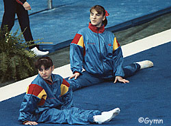

Alicia Fernandez (ESP)
 Alicia Fernandez and Eva Rueda (right) during warm ups at the 1990 American Cup. |
Alicia was born on November 25, 1973 in Madrid. She was coached by Jesus Carballo.
Competition Results
1987
Mediterranean Games: 2nd FX
World Championships (Rotterdam): 12th Team
1989
Blume Memorial: 2nd AA
European Championships: 11th AA, 7th B
World Championships: 10th Team, 31st AA
1990
ESP-SUI-GDR Tri-Meet: 3rd AA
European Championships: 17th AA, 4th UB
French International: 5th AA
Goodwill Games: 11th AA
International Champs. of Romania: 8th AA, 2nd FX, 5th UB
USSR v. The World: 2nd Team, 5th AA
World Stars: 11th AA, 7th V
1991
Blume Memorial: 3rd B
Mediterranean Games: 8th AA
1992
Olympics: 5th Team, 20th AA
This page was created on March 10, 2000 and was last updated on July 23, 2005.
© Gymn Forum